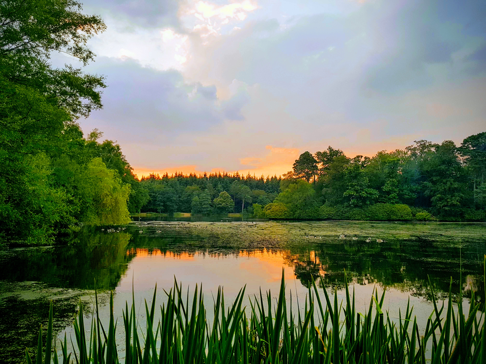

Bramshill House Estate...believed to be one of the most haunted estates in England owing to numerous sightings of its 14 ghosts.
I was fortunate enough to live in an apartment in the grounds of the estate for several years, walking round the lake many times - none of which were after dark!
Many friends and I tried after dark, but we never made it past The Hangman's Copse.
The approach to The Hangman's Copse...despite their daytime bravado, many were unable to make it beyond this point after dark.
Legend has it that the last three people to walk the Copse after dark went insane, one of whom still resides in Bramshill Cottage next to the Mansion.
The Legend of the Mistletoe Bough...is a story associated with several several English Country Mansions including Bramshill House.
On the eve of their wedding, a couple played a game of hide and seek where the bride is believed to have hidden in a wooden chest.
Fearing his bride had ran away, the groom was left broken-hearted after searching for several hours.
Her hiding place was not discovered until the chest was finally opened after being shipped to Germany over 50 years later.
The White Lady...who is often reported to be seen in the Fleur-de-Lys Room is believed to be the ghost of the bride.
Michael I, The Last King of Romania...asked to be moved from the Fleur-de-Lys room, in order to not be disturbed by a woman in a white dress who he claimed to disturb his sleep every night.
The ghost of a young child...is also said to try to hold the hand of those who spend time in this room and also the library.

One summer night...I was walking past the main house and noticed light from a window with a chandelier causing shadows of two people dancing within the room.
I later found that the house did not have any electricity, and Security confirmed no-one had permission to enter and the locks were undisturbed.
Perhaps I had completed a lap of the lake after dark after all....